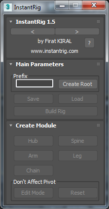

Quick Start¶
InstantRig has an interactive tool bar. Panels are changed depend on which part of rig is selected.
- Set your character name or leave it blank. Click “Create Root” button. It’s root controller of rig. Each time you click “Create Root” button new set of rig will be created.
- Select root controller if it’s not selected. “Hub” button will be enabled. Hub is main branch bone. Every other modules branch from Hub. Mostly it’s pelvis bone for bipedal or quadrupedal rigs. Now create hub bone.
- Now “Spine”, “Arm”, “Leg” and “Chain” buttons are be enabled. If they are not, be sure hub bone is selected. That means any of these modules can be branched from hub. Continue creating spine.
- When any part of spine selected, new rollout will be appear on panel named “Spine Attributes”. Change bone count and align chest as you wish. Spine bones cannot be rotated. “Pivot at Middle” option puts controller middle of chest when rig is builded. Otherwise pivot stays as it is.
- Select chest bone and click “Spine” button once again. It creates new spine module top of current spine. We will use it as head. Change bone count and align bones as you wish.
- Select head and click “Edit Mode”. It allows you to transform head bone without affecting pivot.
- Select chest bone and create arm. When you select any part of arm module new rollout will be appeared on panel named “Limb Attributes”. Align arm as you wish. Select hand and create fingers as many as you want.
- We need to create new symetrical arm on other side of chest. First select arm and click “Copy”. Select chest bone and create new arm. Be sure new arm is selected and click “Paste Mirror” button from “Copy/Paste” panel.
- Select hub bone and create leg. Adjust leg as you wish similar like we did arm. And paste mirror to other side.
- Now we will add ponytail to head. Select head bone and create chain. Adjust bone count and place bones as you wish.
- When we finish placing all modules to model, we are ready to build rig. Select any part of rig. Enter name to “Prefix” section or leave it blank. Click “Build Rig” button. In couple seconds rig will be ready to animation.
- Once rig is created, you can skin your character with InstantSkin feature with one click.

Note
InstantSkin does not guarantee perfect skinning, you may need adjust skin weight depend on you character topology.
Congratulations! You have a production ready and flexible character rig.